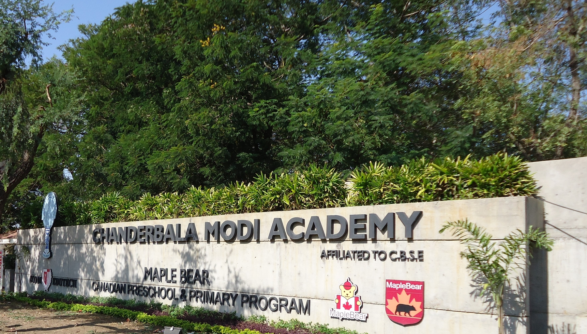

Welcome to Chanderbala Modi Academy
Chanderbala Modi Academy is managed by Mahaluxmi Charitable Society and was started in the year 1993 with a vision to create an Institution par excellence. The Mahaluxmi Charitable Society is the apex body of Chanderbala Modi Academy, and is registered under the Society’s Registration Act of 1860. The school is named after Mrs. Chanderbala Modi, the honourable wife of Mr. Vinay Kumar Modi, the Patron. Mrs. Modi is admired far and wide for her magnanimity and philanthropic bent of mind. The Academy is catering to the educational needs of the children of the Ankleshwar–Bharuch industrial belt in the South Gujarat region. It’s an exemplary institution affiliated to the Central Board of Secondary Education, New Delhi and is a model for Co-Educational English Medium School in the region. The Academy has already occupied a prominent place in not only the state of Gujarat but also in the chain of excellent Modern English Medium Public Schools. It has been declared “Wonder School” twice by the Times of India in Gujarat. In the Pre-Primary and Elementary classes the school has introduced the international Maple Bear methodology of teaching and learning that has its roots in Canada. It is the only Maple Bear School in the entire Gujarat state. The school is true abode to moral and ethical preaching as seen in the deeds of the students. Besides classroom teaching the Academy lays a great deal of stress on the physical development of the child through regular activities. Educational Tours and excursions form a part of regular curriculum. The children of the Academy have done proud to the Institution by bagging awards at the National and State level tournaments and competitions. The Academy has in-house facilities for Recreation, Art, Sports, Library, Computer Education, Craft, Dance, Photography and Music. The dedication of the Institution has listed it in the Limca Book of Records (1996 edition) for a campaign against Drug Abuse. The Academy’s educational philosophy is based on a modern and progressive approach of providing wholesome and quality education with the country’s rich cultural heritage at its base. It lays special emphasis on the development of a child in different facets of Academic, Moral, Spiritual, Social and Personnel Values. Children are trained to be patriotic, humble, and responsible law abiding citizens of this country. CMA is now a member of ‘Round Square‘, a framework for excellence and continuous improvement, along with structured opportunities to collaborate and share experiences with like-minded peers around the world. Being one of the best schools in the region, affiliated to CBSE, Co-ed., occupying a prominent place among the leading schools of South Gujarat, the school has done very well so far. It is the absolute abode to learning and teaching. It has proved its worth not only in academics but in co-curricular arena, too. The school has twice been declared one of the “Wonder Schools” of Gujarat, by ‘The Times of India’ and also received a couple of National Awards. The school has updated itself as per time. It is equipped with Smart Classrooms, Digital Math Lab, AC rooms for Pre-primary section, lush green surroundings, splendid grass grounds, tennis court, badminton court, swimming pool facility, wonderful gardens, excellent transport facility, music room, art & craft room, dance room, library, most modern Labs, State-of-the-Art IT Lab etc. CMA is now ‘Microsoft School’. Very soon, the school will have multi-purpose Activity Hall, Cafeteria, Open Air Theatre, Skating Rink and Parent Resource Centre.
Principal's Message
Welcome to our website. This website will provide you with useful and important information about the school. The website has various links that you are encouraged to view. We hope that you will find them useful. Chanderbala Modi Academy caters to the the educational needs of roughly 1200 students of Bharuch District. The large number of curricular and co-curricular activities the school has, create countless opportunities for the students.
Chanderbala Modi Academy is a wonderful place to teach and learn. An experienced and aptly qualified teaching staff is the driving force of this school. The school is also privileged to have the whole hearted support of the parents and the Management in all its endeavours. I acknowledge the co-operation of the District Authorities in all the activities of the school. The collaborative effort of all these constituents has been critical to our advancement.
This institution is committed to the achievement of its core objective of imparting quality education. In its pursuit we offer a variety of programmes including extended learning opportunity for Maths in digital Maths Lab. and Digital classrooms to make the learning more interesting.
As you browse through the pages of this website, you will notice the wealth of opportunities the students can avail here. I encourage students to take advantage of these opportunities and become involved in the extra-curricular activities that interest them. When students become involved in sports, music, drama, and school clubs along with their academic pursuit, their scholastic achievement often improves. Becoming involved teaches our students to budget their time, keeps them involved in productive activities, and holds them in structured, supervised settings with their peers.
Please feel free to contact us for any other information related to the school.